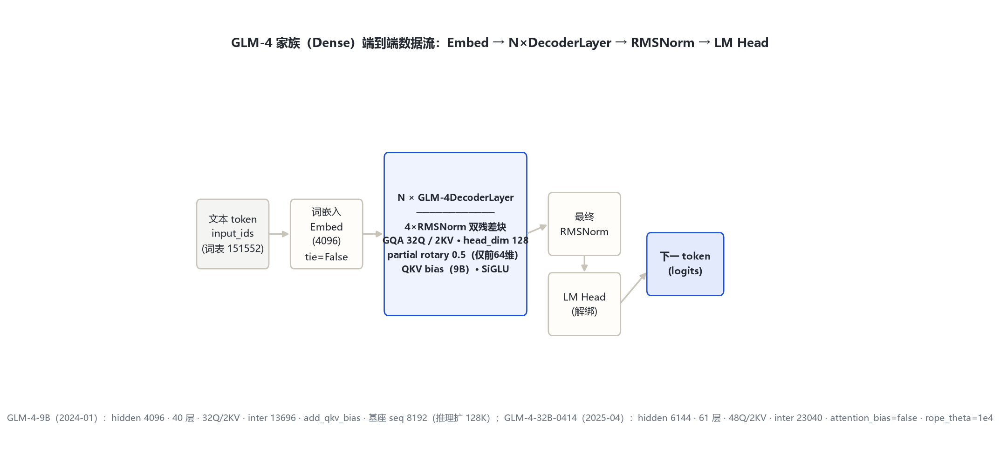
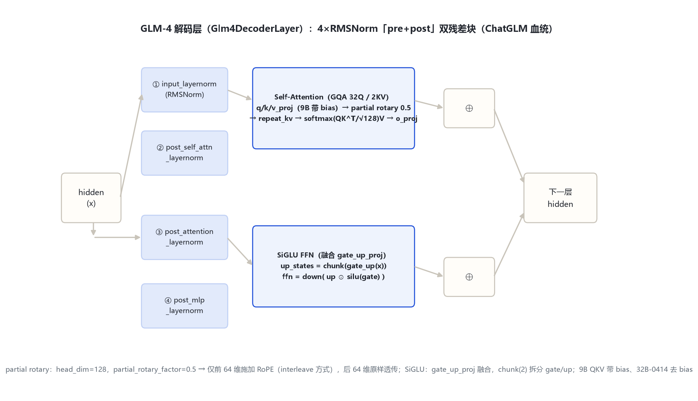

本页以 官方 config（2026-10-31 经 hf-mirror 拉取留档 _tools/_cfgpull/）与 transformers 源码 models\glm4\（本地 E:\transformers）为唯一依据。GLM-4-9B 的 2024 原始发布以 model_type=chatglm + 远程代码分发，transformers v5 原生 glm4 模块是其官方现代移植。所有数字均标注来源。
GLM-4 文本代两档：GLM-4-9B（2024-01 首发，远程 chatglm config）与 GLM-4-32B-0414（2025-04 升级，原生 glm4 config）。主干一致，仅维度/层数/个别开关随尺寸变化。
| 字段 | GLM-4-9B（2024-01） | GLM-4-32B-0414（2025-04） |
|---|---|---|
| 入口类 / model_type | ChatGLMModel（远程，chatglm） | Glm4ForCausalLM（glm4） |
| 形态 | 纯文本 Dense | 纯文本 Dense |
| hidden_size | 4096 | 6144 |
| num_hidden_layers | 40 | 61 |
| num_attention_heads (Q) | 32 | 48 |
| num_key_value_heads (KV) | 2（multi_query_group_num=2） | 2 |
| head_dim | 128（kv_channels=128） | 128 |
| intermediate_size | 13696（ffn_hidden_size） | 23040 |
| vocab_size | 151552 | 151552 |
| partial_rotary_factor | 0.5（original_rope） | 0.5 |
| rope_theta | 10000 | 10000.0 |
| max_position_embeddings | 131072（原生 port）；基座 seq 8192，推理扩 128K | 32768 |
| attention_bias（QKV 偏置） | true（add_qkv_bias） | false |
| tie_word_embeddings | false | false |
| rms_norm_eps | 1.5625e-6 | 1e-5 |
要点：① 两档均为 Dense（config 无专家字段）；GLM-4-32B-0414 的 architectures=Glm4ForCausalLM 证实其非 MoE——MoE 是 GLM-4.5 才引入。② GQA 分组 9B=16:1、32B=24:1。③ QKV 偏置是唯一注意力开关差异（9B=true、32B-0414=false）。④ partial rotary 0.5 两档均显式给出。
文本 token → 词嵌入（不绑定 LM Head）→ N 个 GLM-4DecoderLayer（4×RMSNorm 双残差：注意力子层 + SiGLU FFN 子层）→ 最终 RMSNorm → LM Head（解绑）。GLM-4 为纯文本代，无视觉塔。

全家族统一主干：Embed → N×DecoderLayer → 最终 RMSNorm → LM Head；差异集中在 hidden、层数、Q 头数与 QKV bias 开关。
Glm4DecoderLayer（modeling_glm4.py:66-109）含两组残差子层，每子层用前置+后置两个 RMSNorm（post_layer_norm 的 ChatGLM 传统，区别于 Qwen3 的单 RMSNorm 前置）。

GLM-4 继承 ChatGLM 的 partial rotary：head_dim=128 中只有前一半（64 维）施加 RoPE，后一半原样透传。旋转维度 dim = head_dim × 0.5 = 64[S:290-292]。
num_key_value_groups = Q头 / KV头（[S:204]），运行时 repeat_kv 把 K/V 从 KV 头复制到 Q 头数[S:112-121]。9B=16:1、32B=24:1。
Glm4RMSNorm（[S:310-328]）先 fp32 归一 hidden × rsqrt(mean(x²)+eps) 再乘 γ。每子层前置+后置各一个 RMSNorm，共 4 个/层。
Glm4MLP（[S:48-63]）用单个 gate_up_proj 投影到 2×intermediate，再 chunk(2) 拆 gate/up。
| 尺寸 | Q 头数 | KV 头数 | GQA 分组 | head_dim |
|---|---|---|---|---|
| GLM-4-9B | 32 | 2 | 16:1 | 128 |
| GLM-4-32B-0414 | 48 | 2 | 24:1 | 128 |
注意力缩放固定 head_dim^-0.5（modeling_glm4.py:205）；9B 远程 config 的 apply_query_key_layer_scaling 是旧版 QK 缩放开关，原生 port 统一为 head_dim^-0.5。
| token | ID | 含义 | 来源 |
|---|---|---|---|
| pad_token_id | 151329 | 填充 | config |
| eos_token_id | [151329,151336,151338] | 序列结束（多终止符） | configuration_glm4.py:79 |
| vocab_size | 151552 | 词表大小（padded_vocab_size） | config |
| boi / eoi | 151339 / 151340 | 图像块起止（仅 GLM-4V-9B） | glm4v config |
词表 vocab_size=151552（GLM 系沿用，与 Qwen 的 151936 不同）。GLM-4 文本代无思维标记——长思维链推理是 GLM-Z1 才引入的训练目标，架构不变。
| 维度 | ChatGLM-3（基线） | GLM-4（本代 Dense） | GLM-4.5（下一大代） |
|---|---|---|---|
| 形态 | Dense | Dense（9B / 32B-0414） | MoE（355B-A32B，160 专家） |
| GQA | MQA / 小 KV 组 | GQA 32Q/2KV（16:1） | GQA 96Q/8KV |
| 归一化 | RMSNorm + post_layer_norm | 同（4×RMSNorm 双残差） | 简化为 2×RMSNorm 前置 + QK-Norm |
| partial rotary | 有 | 有（0.5） | 有（0.5）+ use_qk_norm |
| FFN | GLU | 融合 gate_up SiGLU | SiGLU + 路由专家 + 共享专家 |
| MTP | 无 | 无 | num_nextn_predict_layers=1 |
GLM-4 的主线：① 把 ChatGLM 系的 4×RMSNorm 双残差、partial rotary、GQA 定型为 Dense 两代；② 词表固定 151552；③ 为 GLM-4.5 的 MoE 化提供文本主干基础。早期代（ChatGLM-1/2/3、GLM-130B）由同项目另一执行者负责。
标注约定：[S:n]=modeling_glm4.py 行号。GLM-4-9B 远程字段名（kv_channels/multi_query_group_num/ffn_hidden_size/num_layers/padded_vocab_size）与原生 glm4 字段名对应关系已在 §1 逐格标注。核验日期：2026-10-31。